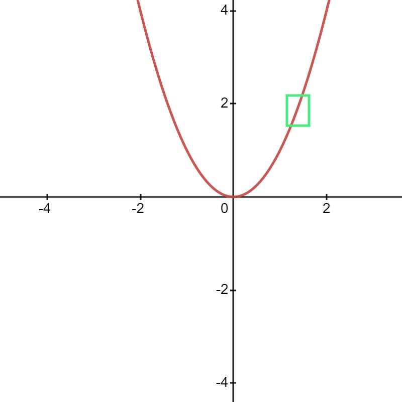
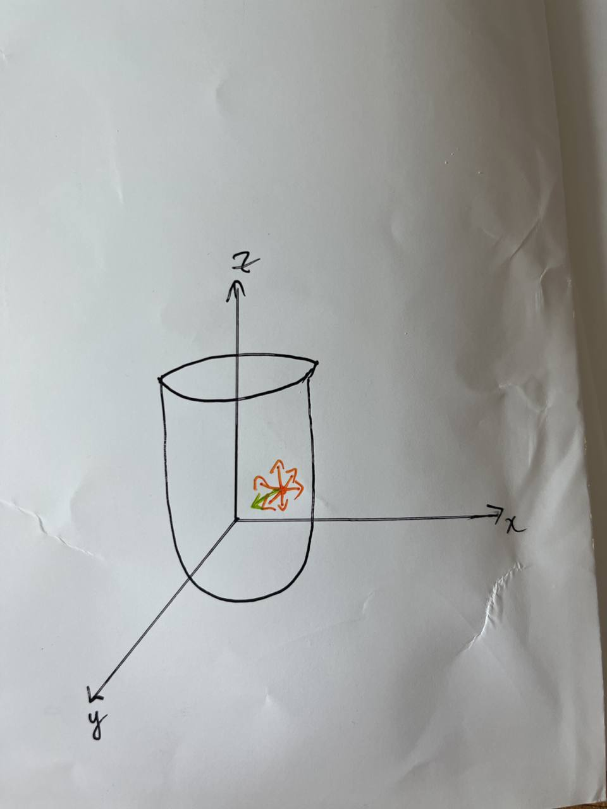

Gradient Descent
Gradient Descent
In mathematics, gradient descent (also often called steepest descent) is a first-order iterative optimization algorithm for finding a local minimum of a differentiable function. The idea is to take repeated steps in the opposite direction of the gradient (or approximate gradient) of the function at the current point, because this is the direction of steepest descent. Conversely, stepping in the direction of the gradient will lead to a local maximum of that function; the procedure is then known as gradient ascent.1
This blog answers two questions:
- How does the gradient descent algorithm work?
- Why does the gradient points in the direction of the steepest ascent?
In many articles and courses, gradient descent is often used to find the minimum of a function, by way of the following procedure: \({\color{red} \textbf{To rewrite this pseudocode}}\)
1. Start at the initial point.
2. Take a step in the opposite direction of the gradient.
3. Repeat steps 2 and 3 until the function is no longer decreasing.
4. The point where the function is no longer decreasing is the minimum.
Our second question is equivalent to answering the point 2, on why do we take a step in the opposite direction of the gradient.
The Intuition
Quote wikipedia's example.
The idea of neighbourhood
Let us start with an one-dimensional example to illustrate the idea of neighbourhood.
Define \(f: \R \to \R\) to be \(f(x) = x^2\), then the gradient of \(f\) at a point \(x = x_0\) is \(\frac {\partial f(x)} {\partial x} \vert x_0 = 2x_0\).
A wrong interpretation is to treat the understanding of gradient as if it is a linear function.
Let us fix a point \(x = 2\), its output \(f(x) = 4\) and the gradient at that point is \(\frac {\partial f(x)} {\partial x} \vert_{x=2} = 4\). It is wrong to say that for every \(1\) unit increase of \(x\), \(f(x)\) will increase by \(4\), where \(4\) is the gradient at that point. One can indeed verify that if \(x\) is increased by \(1\) unit from \(x=2\) to \(x = 3\), then \(f(x) = 3^2 = 9\), where \(f(x)\) is increased by \(5\) units, and not by \(4\).
Unlike the case of a linear function, the gradient of \(f\) at a point \(x = x_0\) is not fixed, but depends on the value of \(x_0\). Consequently, the meaning of the gradient in such a function is only well defined in a small \(\epsilon\)-neighbourhood2 around \(x = 2\). Within this small neighbourhood, we can "loosely" visualize the portion of the function to be a "linear function" with a slope of \(2\), as illustrated in the following figure. The enclosed green box is the neighborhood of \(x = 2\), where if we zoom in, the portion of the function inside looks like a linear function with a slope of \(2\).

Indeed, if we set \(\epsilon = 0.001\), then if \(x = 2\), we have \(f(x) = 4\); moving \(x\) by \(\epsilon\) from \(x = 2\) to \(x = 2.001\) yields us \(f(x) \approxeq 4.004\). We now see that \(x\) increasing by \(0.001\) unit indeed yields us an increase of \(4.004 - 4 = 0.004\), a factor of \(4\) increase to the output \(f(x)\).
Gradient Vector
Definition: Gradient Vector
Let \(f: \R^n \to \R\) be a function that maps \(\x\) to \(f(\x)\):
where \(\x = [x_1, x_2, \ldots, x_n]^\top\) is a vector of \(n\) variables.
Then the gradient of \(f\) is the vector of first-order partial derivatives of \(f\) with respect to each of the \(n\) variables.
We can also replace the notation \(\frac{\partial f(\x)}{\partial x_i}\) in equation \(\eqref{eq:grad_vec}\) with \(f_{x_i}\).
Directional Derivatives
Definition: Directional Derivative
Let \(f: \R^n \to \R\) be a function that maps \(\x\) to \(f(\x)\):
where \(\x = [x_1, x_2, \ldots, x_n]^\top\) is a vector of \(n\) variables.
Then the directional derivative of \(f\) at a point \(\x\) along a direction vector
is the function \(D_{\v}(f)\) defined by the limit:
To avoid notation confusion and also understand the definition better, we use a simple example in 2-dimensional to illustrate the definition of the directional derivative.
Example: Directional Derivative
Let \(f: \R^2 \to \R\) be defined as
where \(\x\) is a vector of scalar values \(x_1\) and \(x_2\), both corresponds to the x- and y-coordinates of a point in the plane respectively.
Following closely the definition, we need to define a direction vector \(\v\). Since the definition did not say what \(\v\) was, we can define \(\v\) to be the unit vector in the south-east direction.
We also note that we want to compute the directional derivative of \(f\) at a point \((x_1, x_2)\), where we arbitrarily choose \((x_1, x_2) = \begin{bmatrix} 1 \\ 1 \end{bmatrix}\).
Then, we can define the directional derivative of \(f\) at the point \(\x = \begin{bmatrix} 1 \\ 1 \end{bmatrix}\) along \(\v = \begin{bmatrix} 1 \\ -1 \end{bmatrix}\) as:
which evaluates to how much \(f\) changes when it moves a small unit distance \(h\) from \(\x\) to \(\x + h\) along the direction \(\v\).
Intuition of Directional Derivative
This section builds up to an important derivation of the idea of the directional derivative.
Warning
In this section, we should constantly recall the idea of a neighbourhood whenever we talk about per unit change, we should visualize that this unit is very small.
Let us restrict our focus to 2-variable mutlivariate function \(f(x, y)\), bearing in mind that it can be scaled up to \(n\) variables. The components of \(\nabla f\) are the partial derivatives of \(f\) with respect to \(x\) and \(y\).
More concretely, given the partial derivative
equation \(\eqref{eq:partial_x}\) answers the question: how much does the value of \(f\) change when we hold \(y\) constant and nudge \(x\) by a small amount in the \(x\) direction (i.e. in the direction pointed to by the vector \(\begin{bmatrix} 1 & 0 \end{bmatrix}^\top\))?3
In a similar vein, given the partial derivative
equation \(\eqref{eq:partial_y}\) answers the question: how much does the value of \(f\) change when we hold \(x\) constant and nudge \(y\) by a small amount in the \(y\) direction (i.e. in the direction pointed to by the vector \(\begin{bmatrix} 0 & 1 \end{bmatrix}^\top\))?4
Finally, it is often useful to note that \(x\) and \(y\) can move in tandem (i.e. we do not hold any of them constant), how do we then calculate how much \(f\) changes when we nudge both \(x\) and \(y\) by a small amount. Note that moving \(x\) and \(y\) both by \(a\) and \(b\) respectively is synonymous with moving the point \((x, y)\) by the vector \(\begin{bmatrix} a & b \end{bmatrix}^\top\). With vector in the playing field, we now attach the notion of a "direction".
We can use equation \(\eqref{eq:directional_derivative_def}\) to compute how much \(f\) changes when we nudge the points \(x\) and \(y\) by a small amount in the \(x\) and \(y\) directions respectively. However, the calculation is cumbersome if we use the definition of the directional derivative. We will now use an example to derive an alternate formula by relating directional derivative to their partial derivatives composition.
Example
If we want to move \(x\) and \(y\) by \(1\) and \(-1\) respectively, then it simply means that \(x\) is moved 1 unit along the \(x\) axis and \(y\) is moved -1 unit along the \(y\) axis.
In vector terms, this means we moved \((x, y)\) in the direction \(\begin{bmatrix} 1 & -1 \end{bmatrix}^\top\).
More generically, let \(x\) and \(y\) move \(a\) and \(b\) units respectively, then we moved \((x, y)\) in the direction \(\begin{bmatrix} a & b \end{bmatrix}^\top\). It turns out that the amount that \(f\) changes when we move in the \(\v = \begin{bmatrix} a & b \end{bmatrix}^\top\) direction is exactly how much \(f\) changes when we move \(a\) units along the \(x\) axis and \(b\) units along the \(y\) axis5.
Recall that we know how much \(f\) changes when we move \(x\) by 1 unit:
- The partial derivative of \(f\) with respect to \(x\): \(\frac{\partial f(x, y)}{\partial x}\)
Recall that we know how much \(f\) changes when we move \(y\) by 1 unit:
- The partial derivative of \(f\) with respect to \(y\): \(\frac{\partial f(x, y)}{\partial y}\)
It follows that if we move \(x\) by \(a\) units, then \(f\) changes by
- \(a \cdot \frac{\partial f(x, y)}{\partial x}\)
and if we move \(y\) by \(b\) units, then \(f\) changes by
- \(b \cdot \frac{\partial f(x, y)}{\partial y}\)
Therefore, the amount that \(f\) changes when we move \(x\) by \(a\) units and \(y\) by \(b\) units is
- \(a \cdot \frac{\partial f(x, y)}{\partial x} + b \cdot \frac{\partial f(x, y)}{\partial y}\)
One might notice that for multivariate \(f:\R^n \to \R\), the derivative \(D_{\v}(f)\) at the point \(x \in \R^n\) is defined to be a linear map \(T: \R^n \to \R\). Therefore, the linearity rule applies.
If the above is still not obvious, then we can approach it geometrically. Recall that we are mapping from \(\R^2\) to \(\R\), the below diagram illustrates the mapping.
Theorem (The Direction Derivative)
The intuition developed in the previous section allows us to derive a new formula to calculate the directional derivative of \(f\) at a point \(\x\) when moved in the direction of \(\v\).
Although the example used is in 2-dimensions, we can generalize to \(n\) variables and we state it formally.
Theorem: Directional Derivative
Let \(f: \R^n \to \R\) be a function \(f(\x)\) where \(\x = [x_1, x_2, \ldots, x_n]^\top\) is a vector of \(n\) variables.
If \(f\) is differentiable at \(\x\), then the directional derivative \(D_{\v}(f)\) at \(\x\) is defined as follows:
In most textbooks, we will normalize the direction vector \(\v\) to the standard unit vector \(\u\). However, the usage of unit vector simplifies the derivation and other applications67 , it is not an universal rule.
Important
It is extremely important to remember that the gradient vector of \(f\) at \(\x\) is already defined as \(\nabla f(\x)\), to be the vector of partial derivatives of \(f\) at \(\x\).
This has two consequences:
- Given the gradient vector of \(f\) at \(\x\) and any direction \(\v\), we can recover the directional derivative \(D_{\v}(f)\) at \(\x\) by simply multiplying it by \(\v\).
- Given the gradient vector of \(f\) at \(\x\) and a scalar value directional derivative \(D_{\v}(f)\), we can recover the direction \(\v\) by division.
One variant of the proof:
Info
The
Difference between Gradient and Directional Derivative8
When I was learning multivariate calculus, I have had my fair share of trouble with the difference between the gradient and the directional derivative. It is easy to confuse the two terms.
Let us go back to the definitions:
- The gradient of a mutlivariate function \(f\) at a point \(\x\) is the vector of partial derivatives of \(f\) at \(\x\), as defined in equation \(\eqref{eq:grad_vec}\).
- The directional derivative of a mutlivariate function \(f\) at a point \(\x\) is the scalar value of the partial derivative of \(f\) at \(\x\) in the direction of \(\v\), as defined in equation \(\eqref{eq:directional_derivative_def}\) and \(\eqref{eq:directional_derivative_theorem}\).
There are infinite directional derivatives around a point \(\x\) since there are infinitely many directions \(\v\). However, there is only one gradient vector around a point \(\x\) and this is defined to be the vector that is the steepest ascent, which we will prove in the next section.
Consider the following example:
-
We have a point \((x, y)\) in \(f\), where \(f\) is a function of two variables. Since this function can be graphed in 3-dimensions, we can visualize that there are infinite number of directions around the point \((x, y)\).
-
We can categorize the directions around the point as vectors \(\v\). For simplicity, we restrict \(\v\) to be unit vectors.
-
Recall the definition of the directional derivative of \(f\) at a point \(\x\) to be a scalar-valued function \(D_{\v}(f)\) parametrized by the direction vector \(\v\).
- We also note that \(D_{\v}(f)\) is the instantaneous rate of change of \(f\) when we move in the direction \(\v\).
-
There exists infinite number of such directional derivatives of \(f\) at a point \(\x\) since there are infinite number of directions \(\v\). This can be seen by the orange arrows.
-
However, there exists an unique direction \(\v\) which gives rise to the fastest instantaneous rate of change of \(f\) when moved in that direction.
-
This unique direction points in the same direction as the gradient vector \(\v\).

Gradient Points to the Direction of Steepest Ascent
We finally have the necessary definitions and theorems to prove the following statement:
The direction of steepest ascent of a function \(f: \R^n \to \R\) is given by the gradient vector of \(f\) at a point \(\x = \begin{bmatrix} x_1 & x_2 & \ldots & x_n \end{bmatrix}^\top\). In other words, \(f\) increases the fastest when we move in the direction of the gradient vector.
Before we prove this, it is best for us to rephrase the question to:
Given a function \(f\) and a point \(\x\), which direction vector (unit vector) \(\v\) gives the fastest rate of change of \(f\) when moved in that direction?
This can be then be found easily by following the theorem/definition in the section on the alternative definition of the directional derivative.
Info
The logic is that the directional derivative of \(f\) at \(\x\) is the rate of change, then it suffices to find the direction vector \(\v\) that gives the fastest rate of change.
The definition \(\eqref{eq:directional_derivative_theorem}\) states that \(D_{\v}(f(\x)) = \nabla f(\x) \cdot \v\). We then seek to solve the optimization problem:
where we want to find the unique \(\v_{\max}\) such that \(D_{\v}(f(\x))\) is the maximum.
In equation \(\eqref{eq:steepest_ascent_3}\), we invoked the geometric definition of the dot product to represent the dot product as the cosine of the angle between the two vectors.
Since we are optimizing over \(\v\) and the length of \(\v\) is 1, we can simplify the expression to:
where
- In equation \(\eqref{eq:steepest_ascent_4}\), \(\lVert \v \rVert\) was dropped since it is 1;
- In equation \(\eqref{eq:steepest_ascent_5}\), \(\lVert \nabla f(\x) \rVert\) was dropped since it is not a function of \(\v\) and hence it is irrelevant.
- \(\theta\), however, being the angle between \(\v\) and \(\nabla f(\x)\), is dependent on \(\v\).
- Therefore, \(\cos(\theta)\) is maximal when \(\cos(\theta) = 1 \implies \theta = 0\).
- Consequently, \(\theta = 0\) implies \(\nabla f(\x)\) and \(\v\) are parallel.
Note
At this point, we have answered the question posed:
Given a function \(f\) and a point \(\x\), which direction vector (unit vector) \(\v\) gives the fastest rate of change of \(f\) when moved in that direction?
It turns out this direction/unit vector we are finding is the gradient vector \(\nabla f(\x)\) itself, but reduced to its unit vector since we proved that \(\v \parallel \nabla f(\x)\).
As a result, we can then say that \(f\) increases the fastest when we move in the direction of the gradient vector \(\nabla f(\x)\).
It is worth noting that the rate of change of \(f\) at a point \(\x\) in the direction of the gradient vector \(\nabla f(\x)\) is given by the magnitude of the gradient vector itself.9
Success
We finally convinced ourselves that subtracting the gradient vector indeed (local) minimizes the objective/loss function provided it's differentiable.
References
Bibliography.
- https://www.khanacademy.org/math/multivariable-calculus/multivariable-derivatives/partial-derivative-and-gradient-articles/a/the-gradient
- https://sootlasten.github.io/2017/gradient-steepest-ascent/
-
"Gradient Descent," Wikipedia (Wikimedia Foundation, June 28, 2022), https://en.wikipedia.org/wiki/Gradient_descent. ↩
-
\(\epsilon\) is often denoted \(h\) in the limit definition of derivatives. ↩
-
Proof That the Gradient Points in the Direction of Steepest Ascent: Sten Sootla's Blog, Sten Sootla, March 15, 2017. ↩
-
Proof That the Gradient Points in the Direction of Steepest Ascent: Sten Sootla's Blog, Sten Sootla, March 15, 2017. ↩
-
Proof That the Gradient Points in the Direction of Steepest Ascent: Sten Sootla's Blog, Sten Sootla, March 15, 2017. ↩
-
Why in a directional derivative it has to be a unit vector ↩
-
why normalize and the definition of directional derivative ↩
-
What is the difference between the gradient and the directional derivative? ↩
-
Proof the magnitude of the gradient vector is exactly the rate of change in that direction: Sten Sootla's Blog, Sten Sootla, March 15, 2017. ↩